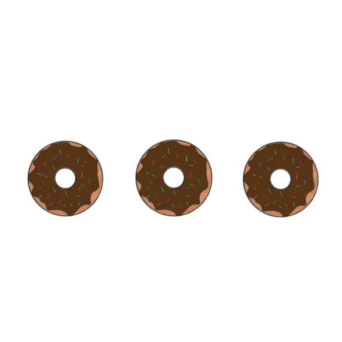

テーマと背景
今回はWebサイトを開いた時に表示される、ローディングアニメーションを実装する方法を3つ発表していきたいと思います。
自分のportfolioに取り入れたいと思い、いろいろな方法で試してみました。静止画像を使用したローディングアニメーション、アニメーション画像を使用したローディングアニメーションを例として挙げるのですが、javascriptを使用しているものもあり、まだまだ勉強中なので深く理解できていないコードもあるのですが、暖かく見守っていただけると幸いです。
①静止画像を使用してjavascriptで実装する方法
まずは静止画像を使用してjavascriptで実装していきたいと思います。
下記の4枚の画像を使用しています。
-
load1
-
load2
-
load3
-
load4
完成形はこちらです。
下のボタンを押せば実際にサイトに実装したものが見えます。
HTMLに画像4枚を読み込ませ、画像の動きをCSSで指定し、jQueryを使用してページが完全に読み込まれた後に特定の要素をフェードアウトさせる処理を行っています。
CSSで指定したアニメーションの動きの流れ
- 1、開始（0%）: 不透明度が 1なので指定した画像が表示される。
- 2、24%: 不透明度はそのまま 1 なので、画像が表示され続ける。
- 3、25%: 不透明度が 0 に変わったので、画像が消え、他の画像が表示される。
- 4、99%: 不透明度は変わらず0なので、他の画像が表示されたままになる。
- 5、終了（100%）: 不透明度が再び 1 に戻ったので、画像が再表示される。
infiniteを指定しているのでアニメーションが1秒間で1サイクル実行され、無限に繰り返されます。
javascriptで指定したアニメーションの流れ
- 1、ページ読み込みが終わり、1.5秒経った後#splash 要素（ローディング画面）がフェードアウトを開始する。
- 2、ページ読み込みが終わり、1.5秒経った後#splash_logo 要素（ローディング中表示されるイラスト）がフェードアウトを開始する。
今はfadeOut("slow")で設定しているのでフェードアウトする時ゆっくりめにアニメーションが消えていくのですが、()の中を"fast"、"normal"などの文字列も指定するか、数字を入れたら画面の消え方が変わります。
②アニメーション画像を使用してCSSのみで実装する方法1
次は、javascriptを使用せずCSSのみでローディングアニメーションを実装していきたいと思います。
下記のアニメーション画像を使用しています。
完成形はこちらです。
下のボタンを押せば実際にサイトに実装したものが見えます。
HTMLにアニメーション画像を読み込ませ、画像の動きをCSSのみで指定しています。
CSSで指定したアニメーションの動きの流れ
- 1、アニメーション画像を表示し、三秒後にフェードアウトのアニメーションが始まる。
- 2、フェードアウトは0秒に設定しているので即座に画像の幅と高さが0になり見えなくなる。
- 3、フェードアウトした後画像はそのまま見えなくなった状態を保持する（forwards によって最終状態が保持される）。
上記のように要素が時間で消えるようなフェードアウトの効果を作ることができ、消えるまでの時間は3sの値を増やせば長い時間表示され、減らせば時間が短縮されます。ただ、JavaScriptを使わずにCSSで秒数を指定して実装するのでサイトの読み込みと関係なくローディングアニメーションが消えてしまう可能性があります。
③アニメーション画像を使用してCSSのみで実装する方法2
②のやり方ではローディングアニメーションがぱっと消えてしまうので別の方法も試してみました。
※アニメーション画像は②と同じものを使用しています。完成形がこちらです。
下のボタンを押せば実際にサイトに実装したものが見えます。
これも②と同じでHTMLにアニメーション画像を読み込ませ、画像の動きをCSSのみで指定していますが、指定したアニメーションが違います。
CSSで指定したアニメーションの動きの流れ
- 1、画像が表示されて3秒後にfadeOutアニメーションを開始させ、opacity が1から0に変化し、画像は徐々に透明になっていく。
- 2、fadeOutアニメーション終了後、画像は透明なまま残り、画面上に表示はされないが存在は画面上に残っている状態になる。
これでアニメーション画像が時間をかけて消える動きを作ることができますが、画面に表示されないだけで要素自体は画面上に残っている状態になってしまいます。今回のコードではz-indexで一番上にローディングアニメーションを持ってきているので、a要素がクリックできなってしまうという大きなデメリットがあります。コードを変えればクリック出来るようになるのかなと思いましたが、そこまで研究出来ていないです。こちらもJavaScriptを使わずにCSSで秒数を指定して実装するのでサイトの読み込みと関係なくローディングアニメーションが消えてしまう可能性があります。
④まとめ
今回のサイトに使用したのは①の静止画像とjavascriptを使用した方法です。知り合いのportfolioを参考にしてコードを考えたりしたのですが、まだ学習していないjQueryを使用していたりでコードを理解するのに時間がかかりました。分からないコードがあればGoogleで意味を調べたりしてどういう動きをしてくれるものなのか、コメントアウトで後から見ても理解しやすいようにしています。
今回挙げたのは3つの方法ですが、他の実装方法がまだあると思うので今後も色々なコードを身に着けていきたいです。